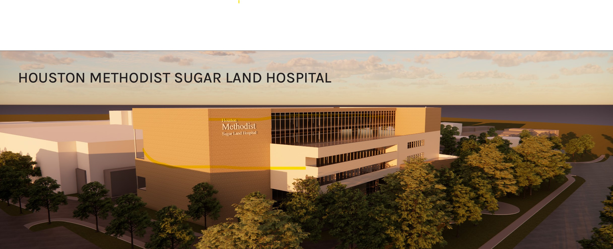
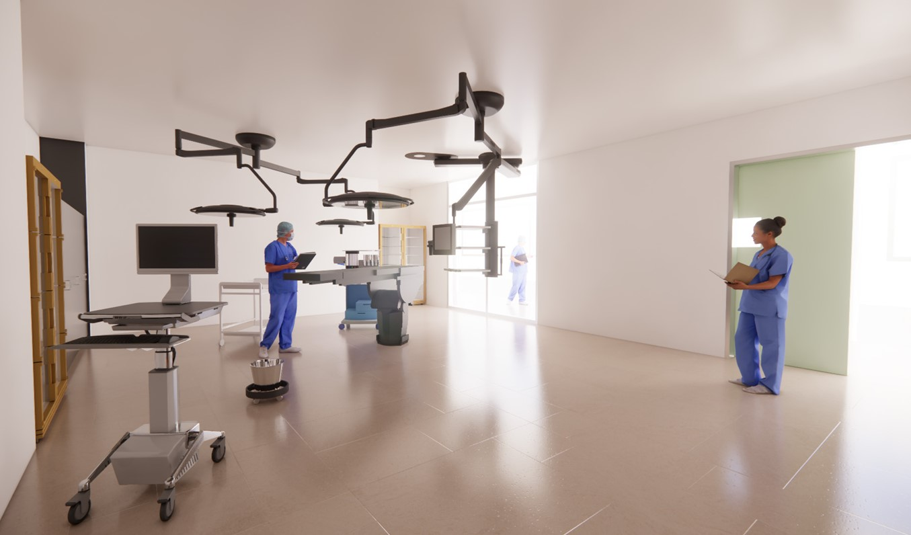
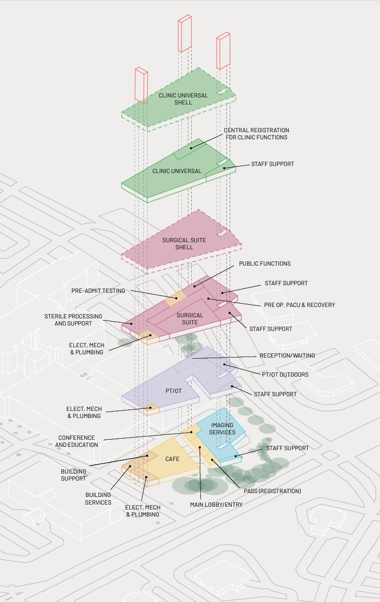
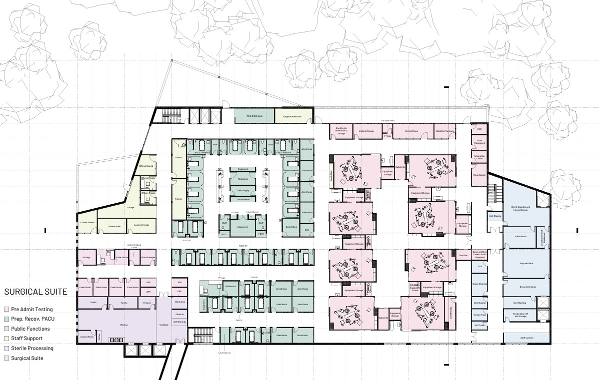
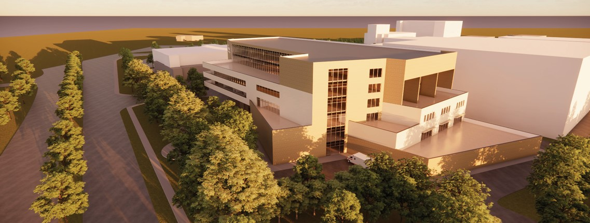
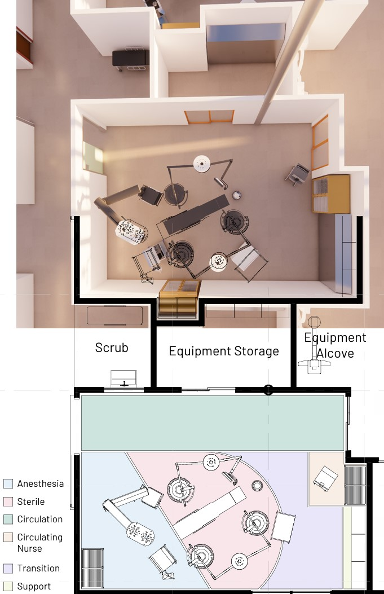

AS PART OF A GRADUATE-LEVEL HEALTHCARE DESIGN STUDIO, THIS PROJECT EXPLORES THE INTERSECTION OF ARCHITECTURE, TECHNOLOGY, AND HUMAN-CENTERED DESIGN TO DEVELOP A SCHEMATIC PROPOSAL FOR A MEDICAL OFFICE BUILDING WITH AN INTEGRATED AMBULATORY SURGERY CENTER (ASC). COLLABORATING WITH ARCHITECTS FROM PAGE AND STAKEHOLDERS FROM HOUSTON METHODIST HOSPITAL, THE DESIGN PRIORITIZES PA TIENT WELL-BEING, STAFF EFFICIENCY, AND EVIDENCE-BASED HEALTHCARE STRATEGIES.
     